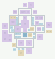
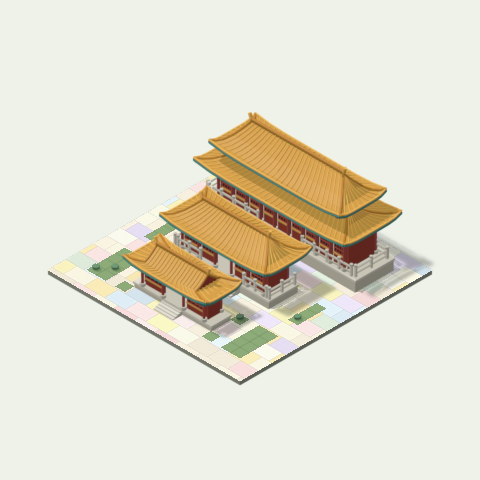

设计工序01 / 06
- 接收输入
- 本阶段交付
- 返修回到
对应 Skill 职责与调用位置
让设计自组织、自生长
先导入平面 JSON，填写稳定地图 ID 和本轮目标，建立可追踪的地图任务。
10 秒为流程压缩示意，使用真实界面结构、已有规划与候选；二次位移仅发生在演示副本。粉彩铺地仍待美术审核。
在地图主控中导入平面编辑器保存的 JSON，
把地块、道路、对象与约束一起交给系统。
原始参考继续随任务保留，文字说明补充本轮目标。

携带地块位置、边界、道路和对象关联。先核对源版本，再检查是否缺少建筑模型。
同一地图沿用稳定 ID。后续修订继续关联这张地图，保留前一轮版本。
说明要制作或调整的对象、风格和接入要求。原图、模型与验收标准随任务一起进入。
建立待接收的地图候选。缺失模型、明确重生对象形成建筑需求，清单与执行计划分别确认后进入制作。
统一工作台连接建筑主控和地图主控。
执行角色按任务规格工作，
关键审核与正式接收由人作出判断。
导入 JSON，检查地块与道路，补充地图身份、本轮目标和原始资料。
交给下一站：建筑需求清单 + 固定规划版本在任务树选择对象，核对规格与参考，确认需求清单和执行计划；调阅候选，记录技术检查与美术反馈。
交给下一站：经审核的候选 + 本体／阴影 + 交付记录在原工作台中查看地图，核对位置、占地、尺度、接地和周边关系；需要改动时，同步到平面编辑器。
交给下一站：当前地图草稿 + 可定位的调整意见点选、移动或修改地块，保存 JSON 后检查局部影响；把新增或重生需求回传建筑主控，重新确认下一轮工作。
回到第二步：修订版本 + 变化范围 + 下一轮需求平面规划进入建筑主控后，设计逐阶段展开。
每一阶段说明输入、设计动作、交付与返修去向，
相关 Skill 提供方法和检查要求。
qianyu-building-workflow点选阶段，查看工作方法
七套平级方法档案，归属于 architectural-massing-style。根据功能、场地和证据选择主方法，将拓扑、体块、开口与材料的推敲要求落实到候选；它们是方法模块，不是七个独立 Agent。
参考变化 → 回到资料与范围；入口／楼层变化 → 回到空间与灰模；颜色／质感变化 → 回到材质；投影／接地问题 → 回到渲染或地图接入。每次调整绑定新版本和受影响工序。
此处展示已安装 Skill 的工作职责与路由。是否实际调用、产出候选及通过审核，以具体任务回执为准；本介绍不会启动建筑生产。
5312 保留建筑制作，8765 保留地图工作。
5313 连接两边的任务、候选与审核信息。
并列主控，按交付契约衔接。
形体、材质、光照与渲染迭代保留连续上下文。
核对目标和原始参考，组织候选生产，回收每一步的产物与失败原因。
承担任务的执行角色
可共享的方法、规范与脚本
调用 Blender 等能力的接口
安装记录与真实调用分开核对；
技术检查和美术批准各有证据。
地图和嵌入的平面编辑器共享当前草稿。
在接收预览中发现问题后，返回同一地图修订，
保留原有对象关联与版本历史。
示意对比：孔庙沿 X 方向移动 0.2 世界单位。
此处的 r1 / r2 与位移仅用于讲解，未写入生产地图。
从地图预览同步草稿，点选建筑，拖拽或多选调整；必要时撤销，检查位置与道路关系。
沿用稳定地图身份，记录修改对象与新版本。上一轮规划、素材和审核依据继续可追溯。
核对改动前后的一圈邻居、支持面、道路和走道。有冲突先回到草稿；道路变化按实际要求确认。
需要新增或重生建筑时，回传对象、修改说明、关联范围与输入版本；重新确认清单及执行计划。
检查通过 → 生成地图修改候选 → 核对地图接收。围绕本轮变化更新，保留其他地块和既有图层。
回传需求 → 确认清单与计划 → 建筑再制作与审核 → 地图再接收。新候选通过后再决定替换与发布。
从地图到规划，再从规划回到制作。调整有来处，下一轮有起点。
完整多设备闭环仍待验收。
每位成员使用自己的 Codex 账号与原有模型、工具。
目标、地块、原始素材
固定任务与输入版本
确认范围与本机资格
Codex + Blender
产物、技术检查、证据
人工美术判断与返修
位置、尺度、阴影核对
缺输入时，先回到任务说明补齐。
原图、模型与多模态资料随任务保留。
名称、稳定 ID、占地尺度、位置、道路关系。
建筑功能、地标属性、应保留的识别特征。
原参考图、模型与必要素材；摘要用于辅助理解。
风格、材质、相机、光照、验收标准和输入版本。
依据 5313 README 与界面源码；本页展示只读样本。
分别记录“测试是否通过”与“孔庙测试分支是否删除”。决定保留时继续保留；先保护候选和证据，再按授权处置。
完整交接后独立复核流程、Agent / Skill 调用与质量。用户确认文件版本和上传范围后，才更新维护库与同步新仓。
